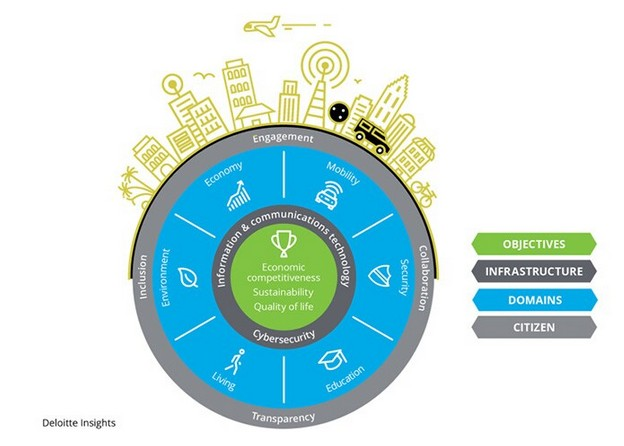

Smart Cities, ¿Sueño o realidad?
29 Noviembre, 2019
Una vez leídos los anteriores posts sobre IoT sabemos cómo puede impactar y está impactando en la sociedad de hoy en día. Pero, ¿y si utilizamos esta tecnología para mejorar los procesos que existen dentro de una ciudad? ¿mejoraría la vida de los ciudadanos? ¿hasta qué punto nos ayudaría? ¿es viable automatizar estos procesos? ¿cómo lo hacemos?
Si alguna vez te has hecho alguna de estas preguntas o sientes curiosidad por alguna de ellas, sin duda este post es para ti.
Previamente hablamos sobre la revolución del IoT y diferentes aspectos de la misma. Mientras ocurría esta revolución, ideas como la “Smart City” fueron propuestas para el futuro del urbanismo. Pero, ¿qué son las “Smart Cities”? [1]
Las “Smart cities” son ciudades inteligentemente conectadas con dispositivos IoT que tratan de mejorar la calidad de vida de los ciudadanos permitiéndoles interaccionar con el entorno urbano. Mediante la creación de una red de dispositivos inteligentes, se abre la puerta a una amplia gama de innovaciones tecnológicas que además de mejorar la calidad de vida de los ciudadanos, puede generar una ciudad sostenible y con una competitividad económica mayor. [1]
¿Por qué dar el paso de ciudad a “Smart City”?
Para responder a esta respuesta, citaré a una de las “Big Four”, Deloitte. Según esta, hay tres principales razones por las cuales es una excelente idea la transición de ciudad a “Smart City”:
Calidad de vida: [2]
“Implica mejorar todos los aspectos de la vida cotidiana de los ciudadanos. Desde calles seguras hasta espacios verdes, cambios en el acceso al arte y la cultura... Una ciudad inteligente crea un entorno que promueve lo mejor de la vida urbana y minimiza las complicaciones de la vida en la ciudad. Las Smart Cities son, en última instancia, excelentes lugares para vivir.”
Competitividad económica: [2]
“Las ciudades han sido durante mucho tiempo importantes centros de comercio, aprovechando la proximidad y diversidad de los ciudadanos para ayudar a impulsar una economía innovadora. Una Smart City garantiza que los empleos y los ingresos fiscales constituyan una plataforma económica saludable.”
Sostenibilidad: [2]
“Una ciudad inteligente garantiza que el crecimiento económico y la calidad de vida se promuevan no solo a corto plazo, sino también para las generaciones futuras. Ser un buen administrador del medio ambiente y promover el consumo sostenible de los recursos naturales es parte de la visión general de las Smart Cities.”
¿Cómo impactan las “Smart Cities” en la sociedad?
Esta infografía de Deloitte hace una magnífica síntesis del impacto de las “Smart Cities” poniendo en el centro los objetivos de estas y alrededor de ellos los diferentes dominios en los que crea un impacto positivo para lograrlos.
Aunque aún no existe ninguna ciudad que pueda considerarse “Smart City” al cien por cien, existen algunos casos en los que aplicando el IoT a diferentes aspectos de las ciudades se ha logrado una mayor eficiencia y flexibilidad en la gestión de las mismas: [1]
Un caso de éxito del IoT aplicado a ciudades digno de mencionar es el de Barcelona. En el año 2012, se empezaron a desplegar las primeras tecnologías IoT en el transporte público, parkings, red eléctrica urbana y gestión de residuos. Estas innovaciones ahorraron costes en el presupuesto de la ciudad y mejoraron la calidad de vida de los barceloneses. [3]
En pocos años Barcelona logró implementar la tecnología IoT en diferentes dominios con éxito:
- Cientos de puntos de WiFi gratuitos para que cualquiera pueda utilizarlos. [3]
- Al menos 19500 medidores inteligentes para monitorizar y optimizar el uso de la energía. [3]
- Contenedores de basura inteligentes que monitorean los niveles de residuos y optimizan la ruta de recolección de los mismos en base a esos niveles. [3]
- Sensores que guían a los conductores a espacios de parking disponibles y que incluso permite pagar online por un espacio en el parking. [3]
- Luces urbanas LED en vez de luces tradicionales. Esto ha supuesto un ahorro del treinta por ciento en el sistema de alumbrado urbano. [3]
El caso de Barcelona es uno de los muchísimos casos que existen de los primeros pasos para la creación de las “Smart Cities” y sin duda, hace años que el sueño de este tipo de ciudades se convirtió en realidad. Es cierto que aún queda mucho que caminar hasta lograr una “Smart City” real, ya que hasta ahora no se ha logrado una ciudad completamente inteligente. Pero esto cambiará a medida que el IoT vaya madurando. ¿Es este el inicio de un mundo más sostenible? ¿seremos capaces de un desarrollo ético de las “Smart Cities” ?, el tiempo lo dirá.
Referencias
- << Smart Cities: The Future Of Urban Development >>, Forbes, acceso el 22 de Noviembre del 2019, https://www.forbes.com/sites/jamesellsmoor/2019/05/19/smart-cities- the-future-of-urban-development/#1f90867c2f90
- << Smart Cities: de la visión a la realidad >>, Deloitte, acceso el 24 de Noviembre del 2019, https://www2.deloitte.com/es/es/pages/public-sector/articles/smartciti es-vision-realidad.html
- << How Smart City Barcelona Brought the Internet of Things to Life >>, Data-Smart Solutions Harvard, acceso el 28 de Noviembre del 2019, https://datasmart.ash.harvard.edu/news/article/how-smart-city- barcelona-brought-the-internet-of-things-to-life-789